昆山园林
kunshan
gardens
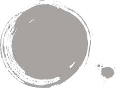
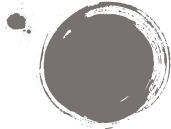
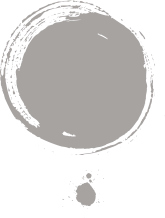
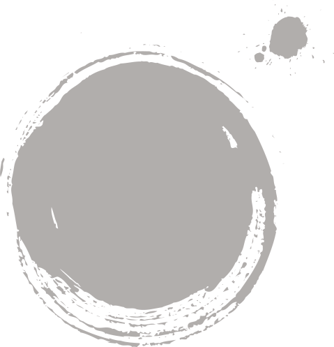
 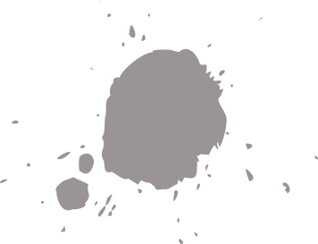
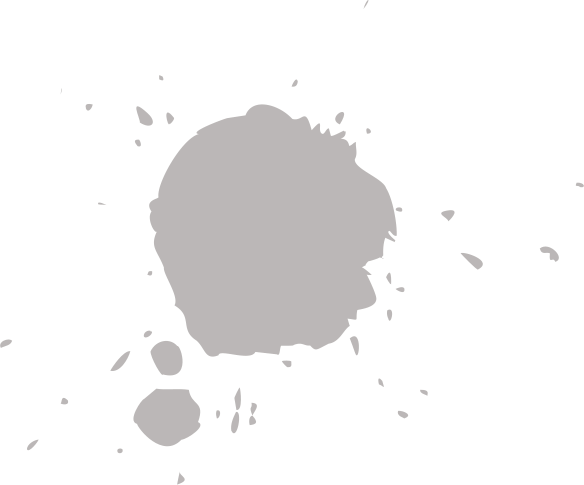
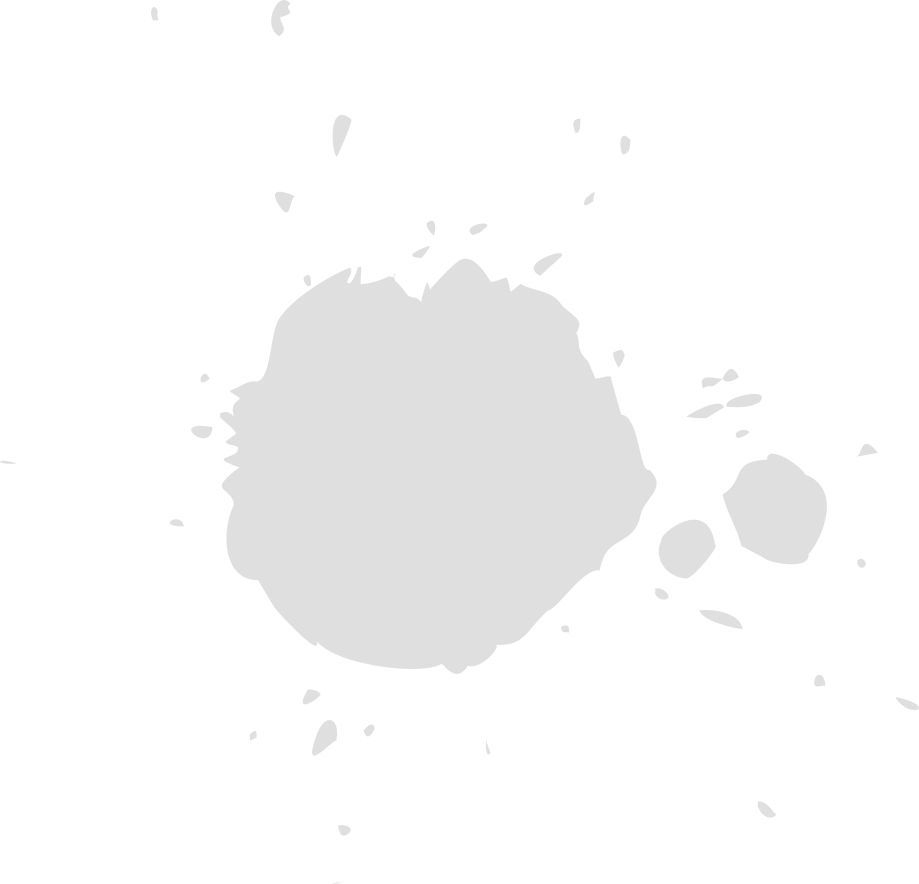
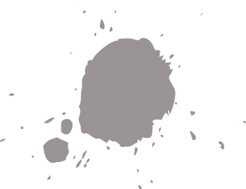
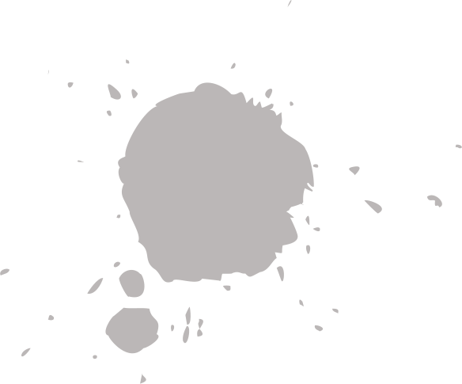
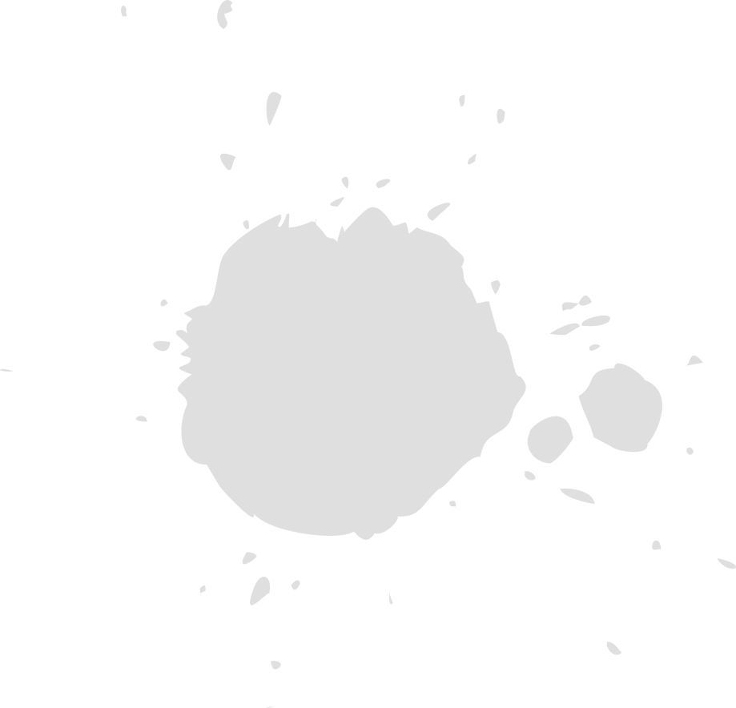
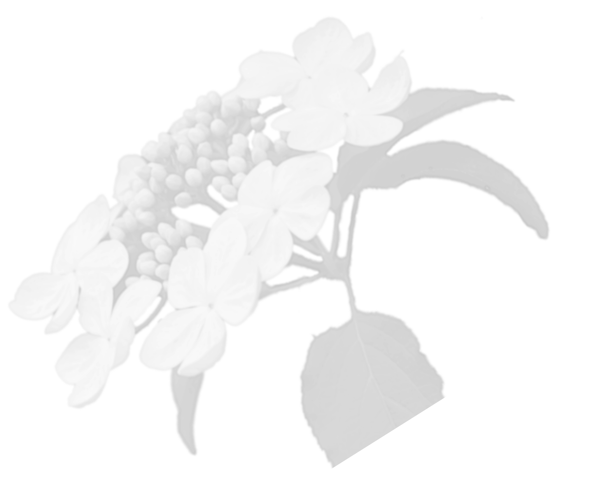
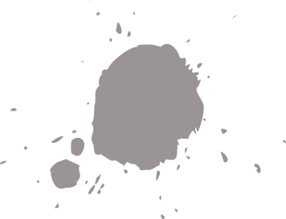
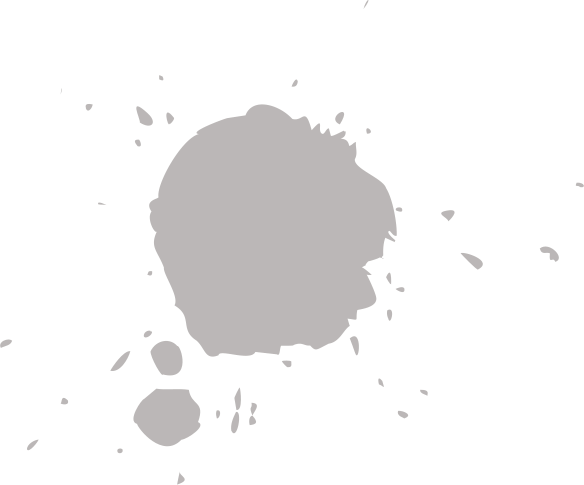
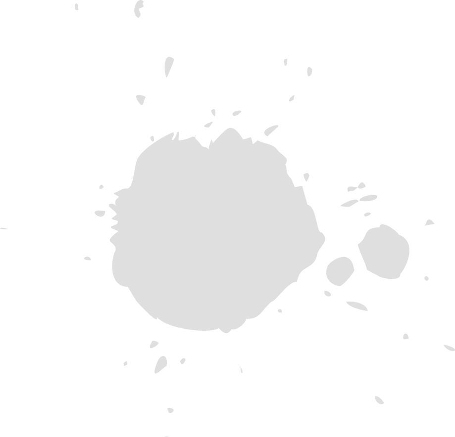
园林美景

便民服務
遊園導覽
-
亭林園
亭林園中玉峰山，形似馬鞍，岩巒層疊，為「東南第一山",文徵明贊玉峰語也。玉峰山上的三寶昆石、瓊花、並蒂蓮，名揚海內外。這裡在清光緒三十二年（1906年）闢為公園，始稱馬鞍山公園，1936年為紀念愛國主義學者、思想家顧炎武，更名為亭林公園。亭林園歷史悠久，名勝古蹟眾多，素有「江東之山良秀絕」、「真山似假山」的美稱。
-
昆山森林公园
公园位于昆山市西北部距市中心4公里处，公园从筹建初期的一个“大苗圃”逐步开辟出湿地生态园、科普体验区、农耕文化馆、百草园、梅园、竹园、牡丹芍药园、向日葵园、鸟岛等特色景点；公园植被也从建园初期的近百种、80多万株增加至110多个科，180多个属，570多个种，120余万株；园内还监测到兽类5目9科34种；两栖类、爬行类动物6科31种；鸟类15目44科173种；鱼类6目13科35种；底栖动物3纲10科36种；各类昆虫近500种。
-
昆山体育生态园
周市，生态优美，城市绿肺昆山体育生态公园 [1] 坐落于江苏省昆山周市镇迎宾路南侧、长江路东侧，位于周市北部新城行政中心，交通位置便捷。园内以水为中心，分隔各区域，设置运动场、亲水平台景观区、儿童游玩区、休闲养心活动区、生态园服务区等5大主题服务区，总投资7500万元，2013年4月13日开园。
養護管理
| 關於2017年度昆山市綠化GFGSHNTS | 0014239823354 | 2017-01-02 | 建設單位 | 施工單位 | 2017-07-30 | 审批成功 |
| 關於2017年度昆山市綠化GFGSHNTS | 0014239823354 | 2017-01-02 | 建設單位 | 施工單位 | 2017-07-30 | 审批成功 |
| 關於2017年度昆山市綠化GFGSHNTS | 0014239823354 | 2017-01-02 | 建設單位 | 施工單位 | 2017-07-30 | 审批成功 |
| 關於2017年度昆山市綠化GFGSHNTS | 0014239823354 | 2017-01-02 | 建設單位 | 施工單位 | 2017-07-30 | 审批成功 |
| 關於2017年度昆山市綠化GFGSHNTS | 0014239823354 | 2017-01-02 | 建設單位 | 施工單位 | 2017-07-30 | 审批成功 |
| 關於2017年度昆山市綠化GFGSHNTS | 0014239823354 | 2017-01-02 | 建設單位 | 施工單位 | 2017-07-30 | 审批成功 |
| 關於2017年度昆山市綠化GFGSHNTS | 0014239823354 | 2017-01-02 | 建設單位 | 施工單位 | 2017-07-30 | 审批成功 |
協會活動
中环沿线绿化为我市城市形象的重要展示窗口，为全面贯彻落实市委十三届五次全会、住建局第十五次局党委（扩大）会议精神，突出精细精致，使城乡建设展现新面貌，2018年8月11日上午，市园林局作为中环绿化养护管理方，市城投公司作为中环绿化建设管理方，共同实施了中环沿线绿化景观“回头看”专项工作，并召开了中环沿线绿化景观提升工作研讨会，中环景观设计单位、中环绿化养护单位及监理单位共同参加。 一是认真组织自查。市园林局与市城投公司共同至中环沿线绿地，对中环绿化景观的存在问题，如绿化带后侧荒芜裸露、土壤质地不佳、园路铺装破损、绿化踩踏、高架绿化养护难度较大等各类问题开展了细致踏勘，寻根问源，明确问题并“对症下药”，提出行之有效的整改措施，以优化当前管理方式促进养护质量的精细化提升
二是积极寻求对策。双方在绿化建设、绿化养护等诸多方面深入探讨，积极出谋献策，对当前的存在问题进行了客观、仔细地分析，最终确定了具体的整改措施及整改时限，保证各项问题得到妥善解决，积极推动了中环景观品质的再度提升。